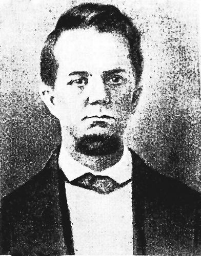

PHOTO ALBUM, CLARK LINE
James William "Buck" Clark, 1894
b. 1862 ?Feliciana, Graves Co KY d. 1940 near Bowie, TX.
Principal genetic ancestor, maternal great grandfather.
Southern thoroughbred descended from British gentry
on both father and mother (THOMAS, his strongly dominant bloodline) sides.
Direct paternal descendant of colonial Virginia planter Captain Christopher Clark (b. ca 1681 VA, son of Micajah And Sallie Ann MOORMAN CLARK, gson of Michael & Margaret
(1679 Christ Church Parish Barbados, 167 acres 5 White Servants 78 Blacks) CLARK) and Penelope ?BOLLING.
(BOLLING: ?Penelope related to Col Robt BOLLING (or esp his son John m. 1697 Kennon) m. 2 STITH (m. 1 Jane Rolfe granddaughter of Pocahontas), see below
related Alanson MOORMAN m. STITH (desc from Col Robt BOLLING); also, Col Robt Bolling's grandmother was Anne CLARKE (his mother was also a
CLARKE), dau of London Merchant Thomas Clarke, "this is the same Thomas Clarke, London
merchant, who shows up in the land records of widow [ancestor] Margaret Clarke of Barbados". Col Robt BOLLING was son of John of BOLLING Hall, Bradford,
Yorkshire Eng... Son of Capt Chris Clark was ancestor BOLLING Clark...?Descendant of Capt Chris and Penelope CLARK was
"ROLFE BOLLING" + ?surname... DNA test tends to support BOLLING theory (no DNA maps
to Scotland and the proposed alternative Johnson family location).
?Bollings descend from Norman Counts of Boulogne, France: e.g. Eustace II, Count of Boulogne, proven companion of William the Conqueror...
Numerous DNA MATCHES to other BOLLING descendants.)
Father of James, Jonathan CLARK (1831-1919, m. Nancy Ann THOMAS, 1 slave 1865 Weakley Co TN tax list).

Samuel Clemens aka "Mark Twain"
Maternal ?double Cousin on Clark and Moorman lines.
Paternal 2nd great grandmother was Rachel, daughter of Captain Christopher Clark and Penelope ?Bolling.
?Most intelligent American of 19th century and author of one of greatest American novels, "Huckleberry Finn".

President Thomas Jefferson (1743-1826)
Micajah Clark (1718-1808), brother of ancester Bolling CLARK, was friend, neighbor (Clark's Tract in vicinity of Keswick just E of Monticello and Shadwell) and Surveyor for Thomas Jefferson. Micajah's son Bowling was friend (see correspondence of TJ), Attorney,
and Overseer for Jefferson at Monticello and Poplar Forest Plantations VA. Bowling was 1st cousin to maternal 4th g grandfather David CLARK (m. Charity BOONE, d. 1825 Weakley Co TN)...
"The Clarks and Jeffersons had known each other for decades, a relationship going back to Bowling’s grandfather Capt. Christopher Clark and Thomas’ father Peter Jefferson."
Meriwether Lewis (1774-1809)
Meriwether Lewis of Lewis and Clark was descended from Col Nicholas Meriwether (1665-1744), law partner and close associate of maternal 6th g grandfather Captain Christopher CLARK (1681-1754) in colonial VA.

Governor James Clark
Maternal cousin, 1836 Governor of Kentucky. His brother Christopher Henderson Clark (1767-1828, Attorney, studied law with Patrick Henry) was also associate of President Thomas Jefferson.
See TJ Correspondence: https://founders.archives.gov/search/Correspondent%3A%22Jefferson%2C%20Thomas%22%20Correspondent%3A%22Clark%2C%20Christopher%22
Descendants of Captain Christopher Clark and Penelope ?Bolling.

John Bullock Clark Sr
Maternal cousin, Congressman b. Madison Co Kentucky, d. Fayette MO.
Descendant of Captain Christopher Clark and Penelope ?Bolling.

John Bullock Clark Jr
Maternal cousin, General CSA and Congressman of Fayette MO.
Descendant of Captain Christopher Clark and Penelope ?Bolling.

Governor Ratliff Boon
Maternal cousin through Charity Boone Clark (m. David Clark, d. aft 1840 Graves Co KY), d. Louisiana MO.
Descendant of Thomas and Eliz Ratcliff Boon m. ca 1674, son of Nicholas BOON (m. Ann) b. ca 1615 Devon England.
These BOON's migration path appears to be mainly Devon England, Isle of Wight Co VA, Northampton/Hertford Co NC, etc...
2 DNA MATCHES to Ratliff BOONE antecedent in family of 4th g grandmother Charity BOONE.

Pat Boone
Singer. Maternal cousin through Charity Boone Clark who was ?2nd cousin once removed of his 3rd great grandfather Bryant Boone. Paternal great grandfather of Feliciana, Graves Co KY area.
Descendant of Thomas and Eliz Ratcliff Boon m. ca 1674.

Daniel Boone (1734-1820)
Kentucky frontiersman, distant maternal cousin through Charity Boone Clark. Abundant DNA MATCHES to ancestors of Daniel BOONE, especially
his father Squire BOONE (1696-1765, 15 matches, m. Welsh Quaker Sarah Jarman Morgan). Cannot fully explain this...
?Possible common BOONE ancestor: father (from N of Exeter, Devon England) of George BOONE I (ca 1610-1676, ancestor of Daniel BOONE pioneer) and his brother Nicholas BOONE (ancestor of Charity BOONE CLARK).
https://www.geni.com/people/Thomas-Boone-Sr/6000000008862140919 This family used noble Norman name of Bohun in 1500's?

Judge Andrew Richmond Boone
Judge of Mayfield KY, maternal cousin through Charity Boone Clark. 1861 secessionist leader.

Major G.W. Clanton, CSA
No relation, but interesting as a paternal 2nd great grandfather of Pat Boone,
1870 resident of Feliciana KY and Major of 8th/12th KY Cavalry CSA. Born Maury Co TN.

Narcissus BYRD Curtner
Maternal 2nd great grandmother, b. AL 1844 buried 1918 Chico, Wise Co Texas.
Mother-in-law of Buck Clark, & wife of Confederate veteran John Henry Curtner, 23rd Texas Cavalry CSA (his grandfather Jacob Curtner 1830 Danville, Mercer
(now Boyle) Co KY, 1 slave). Relation to Byrds of Westover VA not entirely proven.
Proven lineage by DNA test 2020 to 5th g grandfather
Richard BYRD, b. VA 1750 d. near Rogersville TN 1803, slave owning "Planter"; m. Elizabeth Woods Buster 1774 Fincastle VA,
Veteran of American Revolution and Lord Dunmore's War 1774 (Battle of Point Pleasant)...
Maternal grandfather of Narcissus was Rev Jeremiah HORN (b.1794 near New Market, Jefferson Co TN - ?1867):
NW Georgia 1818 (near Spring Place, Cherokee Trader), 1834 Adair Co Oklahoma, moved Republic of Texas ca 1845 (Collin Co)...
American Revolution Pension of 5th g grandfather Jeremiah HORN (b. Orange (Guilford?) Co NC 1755 d. Carroll Co TN 1834, son of Quaker Nathaniel HORN): Served under Colonel John Bowman from Harrodsburg KY and Bryan Station
ca 1778-9, and in campaign against Shawnee Indians north of the Ohio, Battle of Chillicothe (May 1779) on Miami River.
https://revwarapps.org/w3555.pdf, https://en.wikipedia.org/wiki/Battle_of_Chillicothe. Pension to 2nd wife Mary Quarles of Purdy, McNairy Co TN...
Could be cousin to Jeremiah HORN of Boonesboro KY?
Riverside (Farnsley-Moremen Landing) Louisville, Kentucky
Plantation owned by maternal cousin Alanson MOORMAN (m. Rachel STITH, descendant of Col Robt BOLLING, Alanson's mother was also Eliz STITH and desc from Col Robt BOLLING (see James CLARK, above)) 1862. The MOORMANS and CLARKS
came to America together 1669 and were intermarried. Moorman family also had Glenn Fount Plantation just east of Brandenburg KY (Alanson, 29 Slaves 1850).

Charles Watt Moorman (b. ca 1817 Huntsville AL, buried 1850 SW of Carthage, Panola Co Texas)
CLARK/MOORMAN double cousin, a leader in the Regulator-Moderator War ca 1839-1844 of East Texas.
https://www.tshaonline.org/handbook/entries/moorman-charles-watt
"Watt could shoot straighter than any man I ever saw. He was a good scholar, wrote poetry that was real funny, & he had a comical laugh...
Moorman was usually armed with a Bowie knife and a pair of pistols. He carried a heavy stick to cane his minor enemies..."